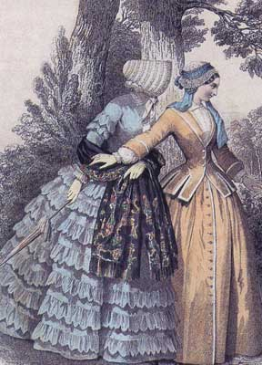
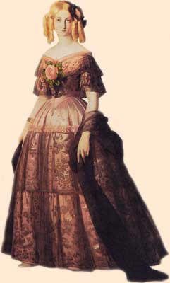
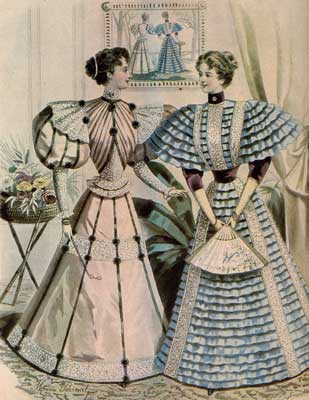
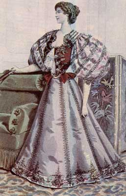
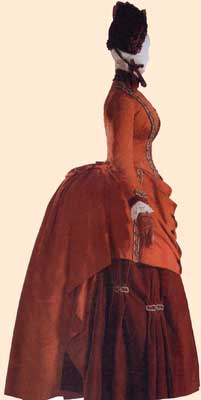
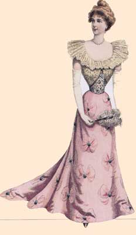
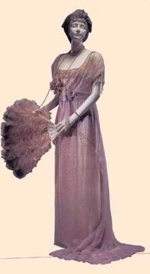
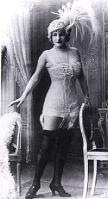

<html>
<head>
<title>Untitled Document</title>
<meta http-equiv="Content-Type" content="text/html; charset=utf-8">
</head>

<body bgcolor="#FFFFFF" text="#000000" background="../images/cvet-fona.jpg">
<div align="right"><font face="Arial" color="#008000"><span lang="en-us"><font color="#752600" size="1"><a href="../Pg%2001-0.html" target="_blank">&lt;&lt; 
  </a></font></span> <a href="../Pg%2001-0.html"><font color="#752600" size="1">на 
  титул модуля</font></a></font><br>
  <br>
</div>
<table width="98%" border="1" cellpadding="5">
  <tr background="uacheika.jpg"> 
    <td background="uacheika.jpg"colspan="3"> 
      <div align="center"><font face="Arial, Helvetica, sans-serif" color="#9b004e" size="5"><b><font face="Monotype Corsiva" size="+6">Корсет 
        XIX века</font></b></font></div>
    </td>
  </tr>
  <tr> 
    <td colspan="3" height="47"> 
      <p align="justify"><font face="Arial, Helvetica, sans-serif">Мода в ХIХ 
        веке менялась очень быстро. В каждой модный сезон появлялся новый мотив, 
        формировавший силуэт.</font>
    </td>
  </tr>
  <tr> 
    <td width="28%"> 
      <div align="center"></div>
    </td>
    <td rowspan="2"> 
      <p align="justify"><font face="Arial, Helvetica, sans-serif">&nbsp; &nbsp; 
        В <b><font color="#9b004e">20-х годах XIX</font></b> века пришел <font color="#FF0000">стиль 
        бидермейер</font> с его «осиной» талией. <br>
        <br>
        &nbsp;&nbsp;&nbsp;Фигура женщины этой эпохи должна была выглядеть хрупкой 
        и изящной. <br>
        <br>
        &nbsp;&nbsp;&nbsp;Линия талии постепенно стала опускаться и к 1825 году 
        она заняла свое естественное положение.В связи с этим опять появились 
        корсеты, дающие возможность женщинам создавать “осиные талии” ( 40 см. 
        в обхвате). <br>
        <br>
        &nbsp;&nbsp;&nbsp;С той поры <font color="#FF0000">корсет</font></font> 
        <font color="#FF0000" face="Arial, Helvetica, sans-serif">приобрёл свои 
        классические очертания</font><font face="Arial, Helvetica, sans-serif"> 
        (<b><font color="#3333FF">=&gt;</font></b>) – силуэт песочных часов. Корсеты 
        были с глубоким декольте и подчёркивали пышность бюста. Талия была тонкая, 
        но её размер отныне не связывался с положением женщины в свете. <br>
        <br>
        &nbsp;&nbsp;&nbsp; На смену шнуровым корсажам уже в 1828 году пришли так 
        называемые <font color="#FF0000">&quot;механические&quot; корсеты</font>, 
        которые затягивались с помощью вбитых металлических петель. Позднее корсеты 
        приобрели воронкообразную форму. </font>
    </td>
    <td width="27%"></td>
  </tr>
  <tr> 
    <td width="28%" height="15"><font face="Arial, Helvetica, sans-serif" size="2">Гравюра 
      из журнала мод. Частное собрание. Прогулочный костюм.</font></td>
    <td width="27%" height="15"><font face="Arial, Helvetica, sans-serif" size="2">Франсуа 
      Ксавье Винтерхальтер. Герцогиня Амалия. 1846 г. Версаль.</font></td>
  </tr>
  <tr> 
    <td width="28%"></td>
    <td rowspan="2"> 
      <p align="justify">&nbsp; &nbsp;<font face="Arial, Helvetica, sans-serif"> 
        В <b><font color="#9b004e">70-е г</font></b>оды XIX века, в соответствии 
        с модой «sansventre» (что означало шнуроваться так, чтобы совсем не было 
        видно живота) была изобретена ещё одна форма корсета - длиной до бёдер. 
        Теперь <font color="#FF0000">корсет не только поднимает грудь и утягивает 
        талию, но и сжимает нижнюю часть живота</font>. <br>
        &nbsp; &nbsp; <br>
        &nbsp;&nbsp;&nbsp; В 70-х годах кринолин любой формы стал считаться неудобным 
        и его заменили тюрнюром (просуществовал недолго до 1890 г.). <br>
        <br>
        &nbsp;&nbsp;&nbsp; В эпоху тюрнюра, показавшего миру и женские бедра, 
        <font color="#FF0000">корсет удлинился почти до колен. </font><br>
        </font> 
    </td>
    <td width="27%"></td>
  </tr>
  <tr> 
    <td width="28%"><font face="Arial, Helvetica, sans-serif" size="2">Гравюра 
      из журнала мод. Частное собрание.</font></td>
    <td width="27%"><font face="Arial, Helvetica, sans-serif" size="2">Гравюра 
      из журнала мод. Частное собрание.</font></td>
  </tr>
  <tr> 
    <td width="28%"></td>
    <td rowspan="2"> 
      <p align="justify">&nbsp; &nbsp; <font face="Arial, Helvetica, sans-serif">Период 
        с <b><font color="#9b004e">конца XIX </font></b> и <b><font color="#9b004e">начало 
        ХХ в</font></b>ека был последним в истории женской одежды периодом, когда 
        женщины имели “осиные талии”. Корсет затягивался так сильно, что силуэт 
        женщины в <font color="#FF0000">корсете напоминал букву S</font> (<b><font color="#3333FF">&lt;=</font></b>). 
        <br>
        &nbsp; &nbsp;<br>
        &nbsp;&nbsp;&nbsp;Корсет - явление моды, и поэтому его могло победить 
        только другое явление моды. Что и произошло.<br>
        <br>
        &nbsp;&nbsp;&nbsp; <font color="#FF0000"><a href="Поль%20Пуаре/09--3.html">Поль Пуаре</a></font> 
        изменил стереотип прекрасного женского силуэта и вместо осиной талии <font color="#FF0000">предложил 
        рубашечный крой</font> и яркие краски. &nbsp;&nbsp;&nbsp;<br>
        <br>
        &nbsp;&nbsp;&nbsp; Врачи глазам своим не поверили: дамы в одночасье побросали 
        свои корсеты и переоделись в штаны наложниц гарема, туники и кимоно.<br>
        </font> 
    </td>
    <td width="27%"> 
      <div align="center"></div>
    </td>
  </tr>
  <tr> 
    <td width="28%" height="39"><font face="Arial, Helvetica, sans-serif" size="2">Платье 
      силуэта &quot;кентавр&quot;. Институт костюма. Метрополитен-музей. Нью-Йорк.</font></td>
    <td width="27%" height="39"><font face="Arial, Helvetica, sans-serif" size="2">Гравюра 
      из журнала мод. Частное собрание. Бальное платье.</font></td>
  </tr>
  <tr> 
    <td width="28%" height="338"> 
      <div align="center"></div>
    </td>
    <td height="342" rowspan="2"> 
      <p align="justify"><font face="Arial, Helvetica, sans-serif">&nbsp;&nbsp;&nbsp;Корсеты 
        существовали до первой мировой войны, в том числе и длинные, до колен, 
        Но эти <font color="#FF0000">корсеты уже не были слишком жесткими</font>, 
        а затем полностью сменились щадящими легкими и <font color="#FF0000">гибкими 
        грациями</font> (<b><font color="#3333FF">&lt;=</font></b>). <br>
        <br>
        &nbsp;&nbsp;&nbsp;И последний взлёт популярности корсет пережил в <b><font color="#9b004e">50-е 
        годы XX в</font></b>ека. Во время популярности стиля &quot;new look&quot; 
        считалось неприличным выходить из дома без <font color="#FF0000">грации 
        </font>или <font color="#FF0000">корсажа</font>, так же как без шляпки 
        и перчаток.<br>
        <br>
        Состоятельные дамы старались приобретать только <font color="#FF0000">модели 
        &quot;от Диора&quot;</font> - из шёлковой сетки, <font color="#FF0000">укреплённой 
        двадцатью четырьмя китовыми усами</font>. <br>
        <br>
        Остальные довольствовались более простыми моделями <font color="#FF0000">из 
        эластичных материалов</font>. Правда такой корсаж имел досадное свойство 
        сползать и скручиваться по краям, но дамы научились с этим бороться, закрепляя 
        его сверху жёсткой лентой, а снизу тугим поясом для чулок.</font>
    </td>
    <td rowspan="2" height="342"> 
      <div align="center"> 
      </div>
      <div align="center"></div>
    </td>
  </tr>
  <tr> 
    <td width="28%" height="2"> 
      <div align="left"><font face="Arial, Helvetica, sans-serif" size="2">Вечернее 
        платье Чарлза Ворта. Музей города Нью-Йорка.</font></div>
    </td>
  </tr>
  <tr> 
    <td background="uacheika.jpg"colspan="3" height="53"> 
      <div align="center"><font size="5" color="#9b004e" face="Arial, Helvetica, sans-serif"><b><i>Вопросы 
        для самопроверки</i></b></font></div>
    </td>
  </tr>
  <tr>
    <td colspan="3" height="152"> <font face="Arial, Helvetica, sans-serif">1. 
      Какие характерные черты стиля бидермейер?<br>
      2. Как выглядел корсет в 20-х годах XIX века?<br>
      3. Характерные особенности корсета середины XIX века?<br>
      4. Какой новый силуэт появился на рубеже XIX - XXвека?<br>
      5. Какой новый ассортимент появился к середине XX века?</font></td>
  </tr>
  <tr> 
    <td background="uacheika.jpg"colspan="3">&nbsp;</td>
  </tr>
</table>
<div align="right"><br>
  <font face="Arial" color="#008000"><span lang="en-us"><font color="#752600" size="1"><a href="../Pg%2001-0.html" target="_blank">&lt;&lt; 
  </a></font></span> <a href="../Pg%2001-0.html"><font color="#752600" size="1">на 
  титул модуля</font></a></font></div>
<map name="Map2"> 
  <area shape="poly" coords="109,101,134,104,148,104,161,121,157,135,152,148,158,176,159,186,143,174,132,166,121,164,104,164,110,154,115,149,108,132,103,119,103,112" href="#09-1.html" onClick="window.open('09-1.html ' ,'a','height=300,width=240,resizable=0,scrollbar=0,toolbar=0,status=0' )">
</map>
<map name="Map"> 
  <area shape="poly" coords="76,98,99,103,131,103,137,98,136,119,137,141,143,161,143,184,138,200,106,203,96,209,90,204,82,199,88,166,93,149,86,143,79,118" href="#09-2.html" onClick="window.open('09-2.html ' ,'a','height=300,width=150,resizable=0,scrollbar=0,toolbar=0,status=0' )">
</map>
<map name="Map3"> 
  <area shape="poly" coords="64,79,86,90,127,78,116,109,115,133,94,142,78,156,75,164,72,147,74,141,71,123,66,109,60,88" href="#09.html" onClick="window.open('09.html ' ,'a','height=350,width=254,resizable=0,scrollbar=0,toolbar=0,status=0' )">
</map>
</body>
</html>